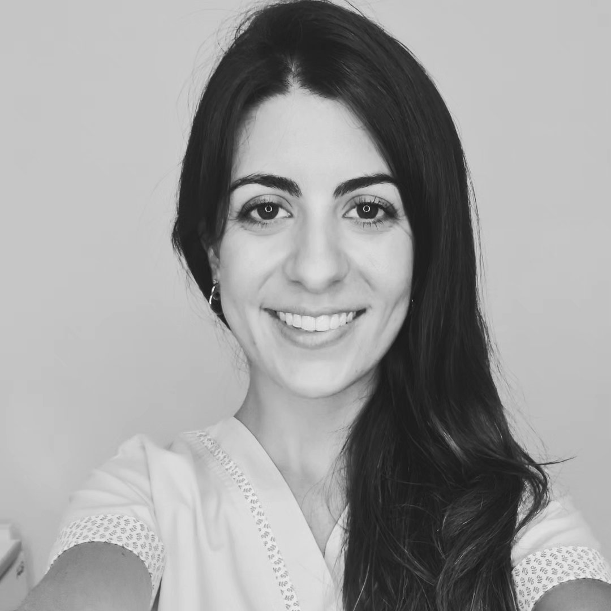
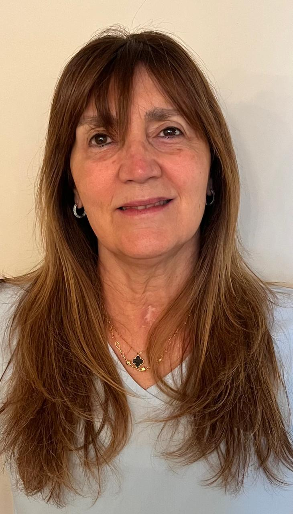

Dra. Constanza Basilico
Ortodoncista — Esp. en alineadores invisibles
Especialista en ortodoncia con formacion en tratamientos con alineadores. Apasionada por la planificacion digital y los resultados predecibles.
En Consultorio de Alineadores creemos que la especializacion marca la diferencia. Nuestras 4 ortodoncistas trabajan exclusivamente con alineadores invisibles. No hacemos brackets, no hacemos "de todo". Esto es lo que hacemos, todos los dias.
Cada una aporta su experiencia y enfoque unico al equipo. Todas comparten la misma pasion: transformar sonrisas con alineadores invisibles.
Especialista en ortodoncia con formacion en tratamientos con alineadores. Apasionada por la planificacion digital y los resultados predecibles.

Ortodoncista con amplia experiencia en casos complejos con alineadores. Su enfoque es el acompanamiento cercano durante todo el tratamiento.

Especialista en ortodoncia estetica. Combina precision tecnica con un trato calido y empatico con cada paciente.

Con anos de experiencia en ortodoncia, se especializa en tratamientos con alineadores para pacientes adultos.
Cuando un profesional se dedica exclusivamente a un tratamiento, desarrolla una experiencia que los generalistas no pueden igualar. Nuestras ortodoncistas ven y resuelven todos los tipos de caso con alineadores, todos los dias.
Reserva tu evaluacion inicial con diagnostico 3D
Respondemos en menos de 1 hora · Lunes a Viernes